3 仮説検定
本章では, 仮説検定の中でも, 実務において良く用いられる,
- 平均値の差の検定
- 独立性の検定
について説明する. 独立性の検定と共通点のある
- 適合度検定
についても, 次章であわせて説明する.
3.1 平均値の差の検定
t検定は, Rで標準的に用意されている関数t.test()を用いて行う.
# t.test(x, y = NULL,
# alternative = c("two.sided", "less", "greater"),
# mu = 0, paired = FALSE, var.equal = FALSE,
# conf.level = 0.95, ...)
#
#
# One Sample t-test
# Performs one and two sample t-tests on vectors of data.平均値の差の検定 (ペア検定)
ペア検定を実施する場合には, t.test()の引数pairedを真 (TRUE, またはT)
に設定する. デフォルトは,paired = FALSE (F) である (ペア検定ではない).
データセット: call_handling_time.csv
ここでは, コールセンターの業務改善データを用いる.
call_handling_time.csv: コールセンターのオペレーター10名について,
旧マニュアル(method=1)と新マニュアル(method=2)による
平均後処理時間(ACW: After Call Work, 分)を比較する
(同じ10名のオペレーターを両方の条件で測定: 対応のあるデータ)
(operator_id, method, time) 20件, オペレーター(operator_id) 10名ACW (後処理時間) とは, 顧客対応の通話終了後, 記録入力や事後処理に要する時間のことで, コールセンターの生産性指標の一つである. 新マニュアル導入の狙いは, この時間の短縮にある.
call_df <- read.csv("class/call_handling_time.csv", header = TRUE)
call_df
#> operator_id method time
#> 1 1 1 7.0
#> 2 2 1 9.1
#> 3 3 1 9.0
#> 4 4 1 11.8
#> 5 5 1 8.1
#> 6 6 1 10.9
#> 7 7 1 10.8
#> 8 8 1 7.0
#> 9 9 1 7.6
#> 10 10 1 10.4
#> 11 1 2 6.2
#> 12 2 2 8.7
#> 13 3 2 7.1
#> 14 4 2 9.4
#> 15 5 2 6.4
#> 16 6 2 9.5
#> 17 7 2 10.9
#> 18 8 2 4.8
#> 19 9 2 7.3
#> 20 10 2 8.8最初に, Rへの指示を簡潔にするために, attach(call_df) を実行する. これにより, call_df内に含まれる変数operator_id,method,timeについては,
それらがcall_dfの変数であることをその都度教えてなくても, Rは認識できるようになる
(Rの“サーチパス”に加わる).
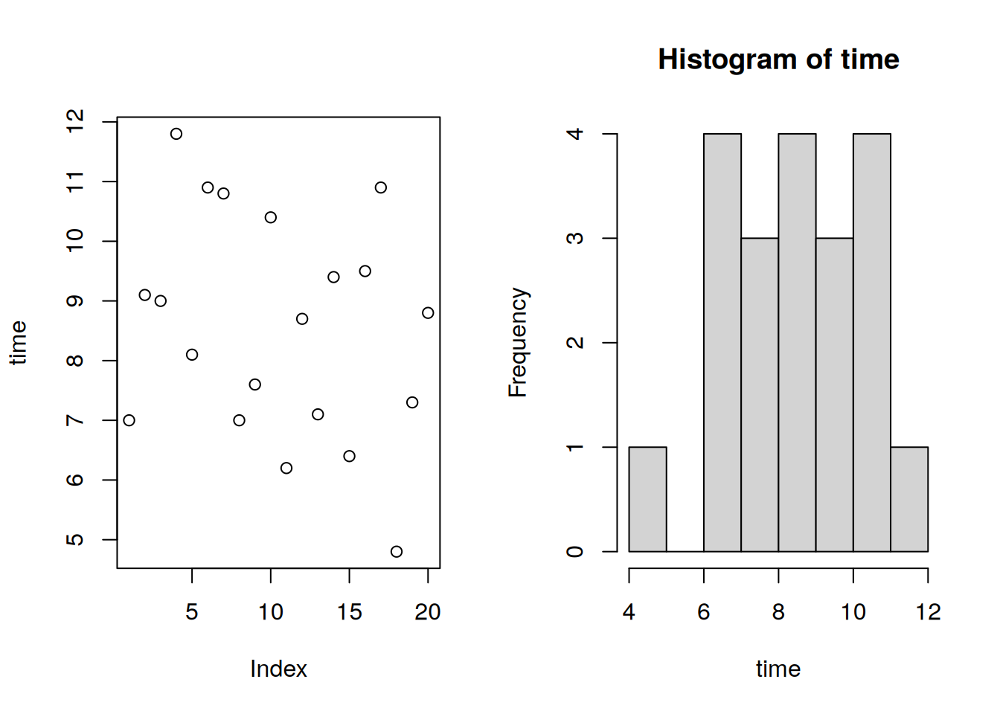
両側検定, 片側検定は, 引数alternativeの値 (“two.sided”, “less”, “greater”) で指定する.
デフォルトはalternative="two.sided", すなわち, 両側検定である.
同じオペレーター10名について, 旧マニュアル(method == 1)と新マニュアル(method == 2)
での所要時間を対応づけて比較するため, paired = TRUEを指定する.
# 両側検定
t.test(time[method == 1], time[method == 2], paired = TRUE)
#>
#> Paired t-test
#>
#> data: time[method == 1] and time[method == 2]
#> t = 4.6374, df = 9, p-value = 0.001224
#> alternative hypothesis: true mean difference is not equal to 0
#> 95 percent confidence interval:
#> 0.6453664 1.8746336
#> sample estimates:
#> mean difference
#> 1.26旧マニュアルの方が時間がかかる (新マニュアルの方が短い) ことが狙いどおりであれば,
対立仮説として「旧 > 新」(すなわち, 差旧-新が正) を想定するのが自然である.
片側検定は, 右側はalternative = "greater", 左側はalternative = "less"で指定する.
# 片側検定
t.test(time[method == 1], time[method == 2], paired = TRUE, alternative = "greater") # 片側 (右側) 検定
#>
#> Paired t-test
#>
#> data: time[method == 1] and time[method == 2]
#> t = 4.6374, df = 9, p-value = 0.0006119
#> alternative hypothesis: true mean difference is greater than 0
#> 95 percent confidence interval:
#> 0.7619387 Inf
#> sample estimates:
#> mean difference
#> 1.26
t.test(time[method == 1], time[method == 2], paired = TRUE, alternative = "less") # 片側 (左側) 検定
#>
#> Paired t-test
#>
#> data: time[method == 1] and time[method == 2]
#> t = 4.6374, df = 9, p-value = 0.9994
#> alternative hypothesis: true mean difference is less than 0
#> 95 percent confidence interval:
#> -Inf 1.758061
#> sample estimates:
#> mean difference
#> 1.26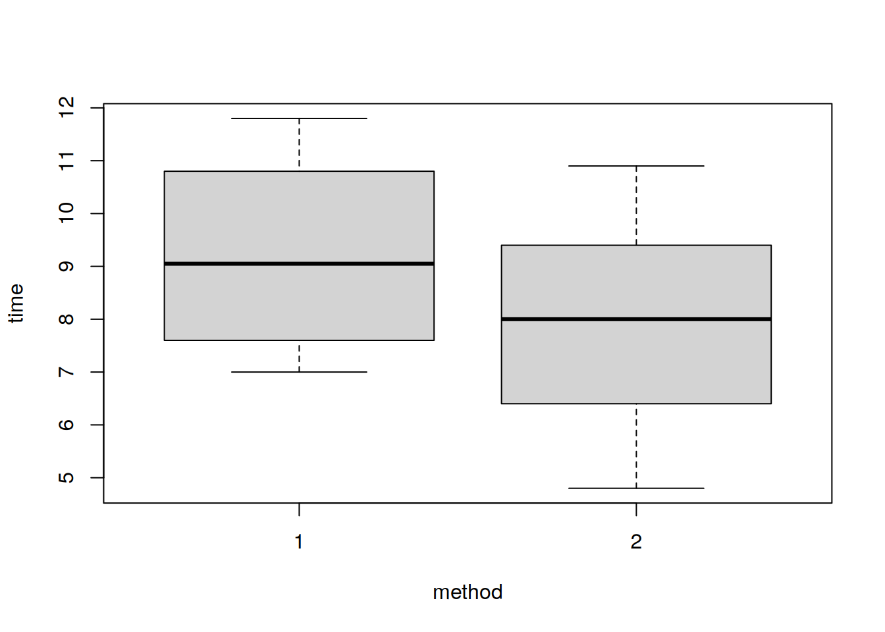
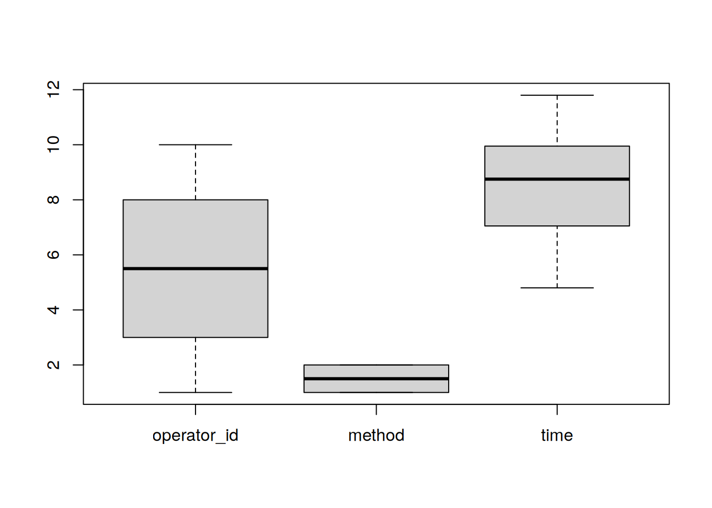
標本平均の差 (method==1の平均 − method==2の平均) は\(1.26\)分であり, 両側検定のp値は
\(0.0012\)と, 1%有意水準 (\(\alpha=0.01\)) でも帰無仮説 (差はゼロ) は棄却される. また,
対立仮説を「旧 > 新」 とした片側検定でも, p値は\(0.0006\)とさらに小さく,
新マニュアルの方が後処理時間を有意に短縮していると判断できる. 一方, 逆向きの片側検定
(対立仮説「旧 < 新」) では, p値は\(0.9994\)と1に近く, こちらの仮説は全く支持されない.
この非対称な結果は, 標本から観測された差の符号 (旧の方が長い) と整合的である.
平均値の差に関するt検定は, 二つの標本 \((x_1,x_2,...,x_{n_1})\), \((y_1,y_2,...,y_{n_2})\) の差\(\mu_1-\mu_2\)がゼロか否かを評価する統計的な手続きである (ここで, 未知の真の平均はそれぞれ, \(\mu_1\), \(\mu_2\)と表記する).
ペア検定は, さらに, この2標本のサイズが等しく (\(n_1=n_2\equiv n\)), しかも, 各々のデータ点がペア \((x_i,y_i)\) として扱える (“対応がある”) ような特別な場合である. 対応のあるケースの例としては, 同一のオペレーターについて, 新旧2種類の条件下でデータを採取した今回のようなケースである.
このようなペアのケースにおける平均値の差の検定は, 2標本のまま扱うのではなく, 各データ点ペアの差 \((x_i-y_i)\) を取ることで1標本に集約した上で, 1標本に対する平均値ゼロのt検定として行う.
すなわち, 帰無仮説\(H_0: \mu_1-\mu_2=0\)に対して, 対立仮説は,
- 両側検定: \(H_1: \mu_1-\mu_2 \neq 0\)
- 片側 (右側) 検定: \(H_1: \mu_1-\mu_2>0\)
- 片側 (左側) 検定: \(H_1: \mu_1-\mu_2<0\)
である.
平均値の差の検定
ペアを構成しない一般の2標本の平均値の差に関するt検定においては, 2標本の持つ未知の分散の大きさが等しいかが問題になる.
t.test()のデフォルトでは等分散性が成立しない (var.equal = FALSE) 設定となっている.
この時は, Welch検定が実行される.
もちろん, 等分散性が成立する場合には, var.equalの値はTまたはTRUE
と指定せねばならない. この時は, 未知の分散はプール化された (“pooled”)
推定値を持ちいたt検定が行われる.
A/Bテストデータ (仮想データ)
デザイン A と B のどちらが平均的な購入意向を高めるか
- id, group (A:旧デザイン, B:新デザイン), purchase_intent (1--7)
- 標本サイズ: nA=50, nB=60abtest_df <- read.csv("class/purchase_1-7.csv", header = T)
boxplot(purchase_intent ~ group, data = abtest_df)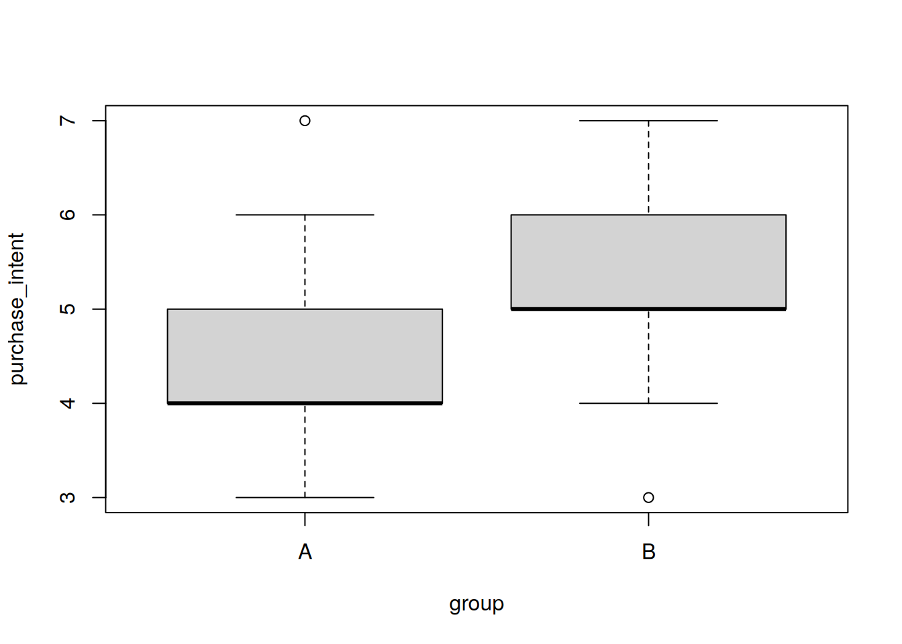
等分散性の検定は, var.test()を用いることができる
# 等分散性の検定 (F検定)
var.test(purchase_intent ~ group, data = abtest_df)
#>
#> F test to compare two variances
#>
#> data: purchase_intent by group
#> F = 1.1253, num df = 49, denom df = 59, p-value = 0.6606
#> alternative hypothesis: true ratio of variances is not equal to 1
#> 95 percent confidence interval:
#> 0.6592874 1.9472951
#> sample estimates:
#> ratio of variances
#> 1.125316
# ※ 省略されることも多いその上で, Welch検定か, プール化された分散推定値を用いるt検定を実行する.
上の等分散性検定の結果より, 帰無仮説 (2標本の分散は等しい, \(\sigma_1^2=\sigma_2^2\)) は棄却されないことから (p値\(=0.6606\)), 等分散の場合について実行すれば良い.
# 等分散の場合 (Pooled variance使用するt検定)
t.test(purchase_intent ~ group, var.equal = T, data = abtest_df)
#>
#> Two Sample t-test
#>
#> data: purchase_intent by group
#> t = -4.3526, df = 108, p-value = 3.067e-05
#> alternative hypothesis: true difference in means between group A and group B is not equal to 0
#> 95 percent confidence interval:
#> -1.1449141 -0.4284192
#> sample estimates:
#> mean in group A mean in group B
#> 4.480000 5.266667しかし, 繰り返し仮説検定を行うことによる弊害 (多重検定問題) を回避するため, 等分散性の検定を行わず, いきなりWelch検定を実行することも多い.
# 等分散でない場合 (Welch t検定)
t.test(purchase_intent ~ group, data = abtest_df)
#>
#> Welch Two Sample t-test
#>
#> data: purchase_intent by group
#> t = -4.3291, df = 101.99, p-value = 3.505e-05
#> alternative hypothesis: true difference in means between group A and group B is not equal to 0
#> 95 percent confidence interval:
#> -1.1470981 -0.4262352
#> sample estimates:
#> mean in group A mean in group B
#> 4.480000 5.266667いずれの方法でも, p値は\(3\times10^{-5}\)程度と非常に小さく, 新デザイン(B)の方が 平均購入意向 (A: \(4.48\) 点, B: \(5.27\) 点, いずれも7点満点) を有意に高めていることがわかる.
自主課題:
Q. 以上の検定結果を解釈しなさい.
Q. 片側検定にするには? 対立仮説の方向はどちらか?
Q. 購入意向 (1-7) は順序尺度では?
Q. 正規分布を前提にしたt検定を使用して良いか?
正規性の確認方法
t検定は, 標本を抽出するもととなる母集団の確率分布が 正規分布であるというのが分布に関する基本的な仮定である.
したがって, t検定の実行に先立ち, 標本が正規分布に従うか否かを調べ, t検定の前提条件が満たされているかどうかを確認することが求められる.
これは, 標本数が小さい時には特に注意する必要がある.
# ヒストグラム作成
A <- abtest_df[abtest_df$group == "A", "purchase_intent"]
B <- abtest_df[abtest_df$group == "B", "purchase_intent"]
hist(A, col = rgb(1, 0.5, 0, 0.5))
hist(B, col = rgb(0, 0.5, 1, 0.5), add = T)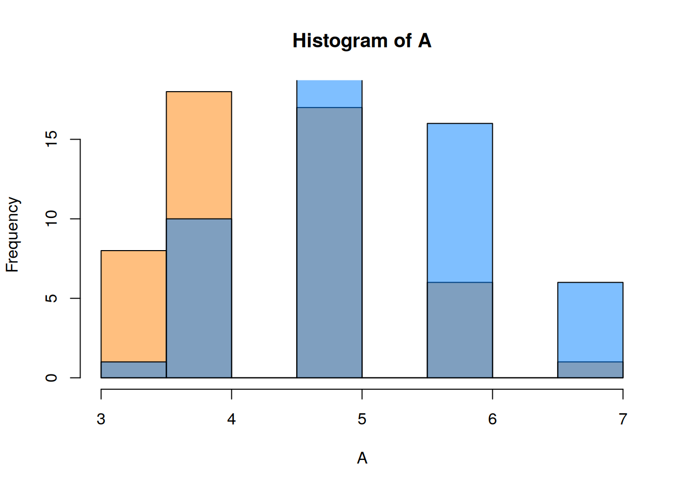
# 正規性の検定
ks.test(A, "pnorm")
#>
#> Asymptotic one-sample Kolmogorov-Smirnov test
#>
#> data: A
#> D = 0.99865, p-value < 2.2e-16
#> alternative hypothesis: two-sided
ks.test(B, "pnorm") # コルモゴロフ・スミルノフ (Kolmogorov-Smirnov) 検定
#>
#> Asymptotic one-sample Kolmogorov-Smirnov test
#>
#> data: B
#> D = 0.99865, p-value < 2.2e-16
#> alternative hypothesis: two-sided
shapiro.test(A)
#>
#> Shapiro-Wilk normality test
#>
#> data: A
#> W = 0.89953, p-value = 0.0004638
shapiro.test(B) # シャピロ・ウィルク (Shapiro-Wilk) 検定
#>
#> Shapiro-Wilk normality test
#>
#> data: B
#> W = 0.89262, p-value = 7.16e-05
qqnorm(A)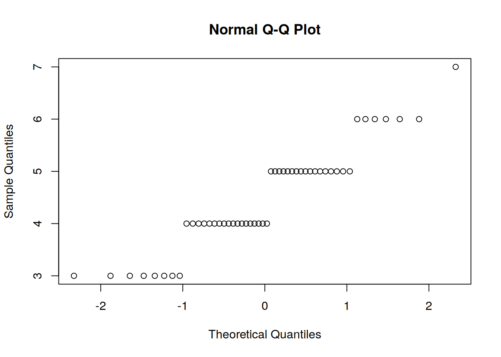
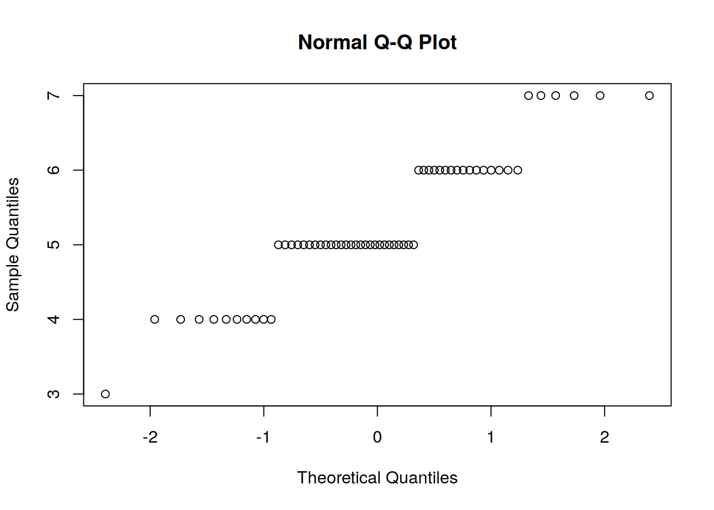
なお, 関数ggplot()を使うことで, よりエレガントなプロットを描くことが出来る.
# install.packages("ggplot2") # 必要に応じてインストール
library(ggplot2)
ggplot(abtest_df, aes(x = purchase_intent, fill = group)) +
geom_histogram(position = "identity",
alpha = 0.5,
bins = 7, # ビンの数は適宜指定(ここでは7)
color = "grey") + # 枠線の色は任意
scale_fill_manual(values = c("A" = "orange", "B" = "lightblue")) +
labs(title = "Histogram of Two Groups (Overlapped)",
x = "Purchase Intent (1-7)",
y = "Count") +
theme_minimal()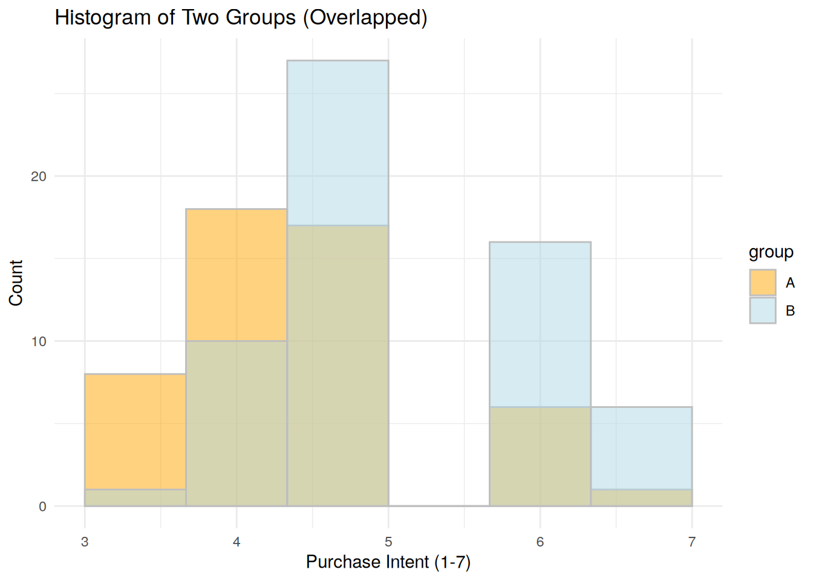
平均値の差の検定 (ノンパラメトリック検定)
上記のように, t検定は標本を抽出するもととなる母集団の確率分布が 正規分布であるというのが分布に関する基本的な仮定である.
しかしその一方で, 標本数が十分に大きい時は, 母集団の確率分布が 正規分布である必要はない.
それは, 中心極限定理の働きによって, 検定統計量が帰無仮説の下では 近似的にStudent t分布に従うことが理論的に示されるためである.
一方, 標本数が大きくない場合には, 母集団の確率分布が正規分布でない場合には, t検定の前提条件から乖離する状況となるため, 別の検定法を用いることが適切である.
ノンパラメトリック検定法は, 分布形状に関する仮定によらない, ロバスト (頑強) な検定方法である.
Wilcoxonの順位和検定 (Mann–WhitneyのU検定)
ここでは, 2群の平均値の差に関する t検定の代替的手法として, ウィルコクソン (Wilcoxon) の順位和検定を紹介する.
- 2群の中央値の差を調べる
- 外れ値に対して頑強
wilcox.test(purchase_intent ~ group, data = abtest_df)
#>
#> Wilcoxon rank sum test with continuity correction
#>
#> data: purchase_intent by group
#> W = 861.5, p-value = 5.992e-05
#> alternative hypothesis: true location shift is not equal to 0
# A,Bを定義しておいた場合, 以下の実行も可能 wilcox.test(A, B)自主課題:
- Q. 以上の検定結果を解釈しなさい.
3.2 カイ二乗検定
前節で扱った平均値の差の検定は, 連続的な数量データを対象とするものであった. これに対して, カイ二乗 (\(\chi^2\)) 検定は, カテゴリー (質的) データに対する 代表的な検定手法であり, 実務では以下のような場面でよく用いられる.
- 独立性の検定: 2つのカテゴリー変数の間に関連があるか (独立かどうか) を調べる
- 適合度検定: 観測された度数の分布が, あらかじめ想定した理論分布と一致しているか調べる
いずれも, Rのchisq.test()関数を用いて行う.
# chisq.test(x, y = NULL, correct = TRUE,
# p = rep(1/length(x), length(x)), rescale.p = FALSE,
# simulate.p.value = FALSE, B = 2000)
# chisq.test performs chi-squared contingency table tests and goodness-of-fit tests.独立性検定
2つのカテゴリー変数が独立かどうかを調べるには, 分割表 (クロス集計表) を作成し,
chisq.test()に渡す.
練習用データ
まずは, 架空のデータで操作を確認する. 商品種類 (A, 4分類) と販売チャネル (B, 3分類) の間に関連があるかを調べる状況を想定する.
# 演習用データの作成 (実務では, ファイルを読み込む)
d1 <- matrix(c(rep(c("a1", "b1"), 76), rep(c("a1", "b2"), 15), rep(c("a1", "b3"),
41)), byrow = T, ncol = 2)
d2 <- matrix(c(rep(c("a2", "b1"), 95), rep(c("a2", "b2"), 30), rep(c("a2", "b3"),
85)), byrow = T, ncol = 2)
d3 <- matrix(c(rep(c("a3", "b1"), 135), rep(c("a3", "b2"), 70), rep(c("a3", "b3"),
95)), byrow = T, ncol = 2)
d4 <- matrix(c(rep(c("a4", "b1"), 69), rep(c("a4", "b2"), 10), rep(c("a4", "b3"),
29)), byrow = T, ncol = 2)
data2 <- rbind(d1, d2, d3, d4)
colnames(data2) <- c("A", "B") # 商品種類(A), 販売チャネル(B)
head(data2)
#> A B
#> [1,] "a1" "b1"
#> [2,] "a1" "b1"
#> [3,] "a1" "b1"
#> [4,] "a1" "b1"
#> [5,] "a1" "b1"
#> [6,] "a1" "b1"
table(data2) # marginal totals
#> data2
#> a1 a2 a3 a4 b1 b2 b3
#> 132 210 300 108 375 125 250
(tbl <- table(data2[, 1], data2[, 2])) # contingency table
#>
#> b1 b2 b3
#> a1 76 15 41
#> a2 95 30 85
#> a3 135 70 95
#> a4 69 10 29
chisq.test(data2[, "A"], data2[, "B"])
#>
#> Pearson's Chi-squared test
#>
#> data: data2[, "A"] and data2[, "B"]
#> X-squared = 27.661, df = 6, p-value = 0.0001088
# chisq.test(data2[, 1], data2[, 2])
# または, 集計済みの分割表を直接渡してもよい
chisq.test(tbl)
#>
#> Pearson's Chi-squared test
#>
#> data: tbl
#> X-squared = 27.661, df = 6, p-value = 0.0001088\(\chi^2\)統計量は\(27.66\) (\(df=6\)), p値は\(0.0001\)程度と非常に小さく, 商品種類と販売チャネルの間には (帰無仮説「独立である」を棄却するに十分な) 関連が あると判断できる.
A/Bテストへの応用 (サイト導線とコンバージョン)
独立性検定は, A/Bテストにおいて, 「施策群 (A/B)」と「結果 (成功/失敗)」という 2つの2値カテゴリー変数の関連を調べる場面でも利用できる.
# サイト導線A/Bとで, コンバージョンへの効果を比較 \t\t\t\t\t\t有\t\t\t\t無
# \tサイト導線A\t50\t\t\t\t131 \tサイト導線B\t23\t\t\t\t35
ABdat <- matrix(c(50, 131, 23, 35), ncol = 2, byrow = T)
chisq.test(ABdat)
#>
#> Pearson's Chi-squared test with Yates' continuity correction
#>
#> data: ABdat
#> X-squared = 2.4566, df = 1, p-value = 0.117
# 導線Aでコンバージョンしない人が10人増えた \t\t\t\t\t\t有\t\t\t無
# \tサイト導線A\t50\t\t\t141 \tサイト導線B\t23\t\t\t 35
ABdat2 <- matrix(c(50, 141, 23, 35), ncol = 2, byrow = T)
chisq.test(ABdat2)
#>
#> Pearson's Chi-squared test with Yates' continuity correction
#>
#> data: ABdat2
#> X-squared = 3.2764, df = 1, p-value = 0.07028
# Fisherの正確確率検定
fisher.test(ABdat2)
#>
#> Fisher's Exact Test for Count Data
#>
#> data: ABdat2
#> p-value = 0.06915
#> alternative hypothesis: true odds ratio is not equal to 1
#> 95 percent confidence interval:
#> 0.2796541 1.0568106
#> sample estimates:
#> odds ratio
#> 0.5410443ABdatでは, p値\(=0.117\)と, 5%水準では導線A/Bとコンバージョンの関連 (独立性からの
乖離) は認められない. ABdat2のように, 導線Aで「コンバージョンしない」人数が
10人増えると (全体のサンプルサイズが変わる), p値は\(0.070\)とやや小さくなるが,
それでも5%水準では有意ではない. なお, chisq.test()は2×2分割表では
デフォルトでYatesの連続性補正を行うため, 標本サイズが小さい場合には,
補正を行わないFisherの正確確率検定(fisher.test())を用いる方が適切な場合もある
(ここでは両者ともp値\(\approx0.07\)と近い結果になっている).
適合度検定
適合度検定は, 観測された1つのカテゴリー変数の度数分布が, あらかじめ想定した 理論的な分布 (確率) と一致しているかを調べる.
# メンデルのデータ（エンドウの交雑実験） 種子の特徴(形質), 黄色・丸い,
# 黄色・しわ, 緑色・丸い, 緑色・しわ
obs <- c(315, 101, 108, 32) # 観測度数
prob <- c(9, 3, 3, 1)/16 # 理論確率分布
chisq.test(obs, p = prob) # obs と prob を用いたカイ二乗検定
#>
#> Chi-squared test for given probabilities
#>
#> data: obs
#> X-squared = 0.47002, df = 3, p-value = 0.9254
# 確認用 (chisq.test()の計算過程を手計算で再現)
ex <- prob * sum(obs)
chisq <- sum((obs - ex)^2/ex)
pval <- 1 - pchisq(chisq, 3)メンデルの交雑実験の例は, 遺伝の法則 (9:3:3:1の理論比) が観測データに よく当てはまる (p値\(=0.925\)と非常に大きく, 帰無仮説は全く棄却されない) 古典的な適合度検定の教材である.
ビジネスデータへの応用例 (新商品のカラー展開)
ビジネスの文脈では, 「市場調査などで事前に想定していた比率 (シェア) と, 実際の販売実績が一致しているか」を確認する場面で, 適合度検定が使われる.
# 新商品(スマホケース)のカラー展開: 発売前の市場調査に基づく想定シェアと,
# 発売1か月間の実売数 (合計400個) が一致していると言えるか 色: 黒, 白, 青, 赤
obs_color <- c(140, 110, 90, 60) # 観測度数 (実売数)
names(obs_color) <- c("黒", "白", "青", "赤")
prob_color <- c(0.4, 0.3, 0.2, 0.1) # 想定シェア (市場調査による事前予測)
chisq.test(obs_color, p = prob_color)
#>
#> Chi-squared test for given probabilities
#>
#> data: obs_color
#> X-squared = 14.583, df = 3, p-value = 0.00221
# 確認用
ex_color <- prob_color * sum(obs_color)
chisq_color <- sum((obs_color - ex_color)^2/ex_color)
pval_color <- 1 - pchisq(chisq_color, 3)こちらは, \(\chi^2=14.58\) (\(df=3\)), p値\(=0.0022\)と, 5%水準 (1%水準でも) で 帰無仮説「実績は想定シェアと一致する」が棄却される. 実際には黒・赤が想定より 多く売れ, 白・青が想定より少ない結果になっている. メンデルの例とは対照的に, 「事前の想定 (理論分布) と実績データが一致していない」ことを示す例であり, 販売計画・生産計画の見直しが必要になる場面に対応する.
自主課題:
- Q. メンデルのデータと, スマホケースのデータで, 検定結果 (p値) はどのように違うか.
- Q. 想定 (理論分布) と実績が「一致している」と言えるのはどちらのケースか.
- Q. スマホケースの例で, もし発売数が同じ比率のまま10倍(合計4000個)になったら, p値はどう変化すると考えられるか. 実際にRで試してみなさい.
分析例: 社内DX研修データ
ここでは, 第1回で用いたdx_training_assessment.csv(社内DX研修の理解度テスト
結果, 受講者45名) を用いて, 本章・前章で学んだ検定手法を実際のデータに
一通り適用する.
dx_training_assessment.csv: 社内DX (デジタルトランスフォーメーション) 研修の
理解度テスト結果 (受講者45名)
emp_id, dept (1営業/2技術/3企画), emp_type (1正社員/2契約社員),
work_years (勤続年数), it_years (IT関連の自己学習・実務経験年数),
prior_training (過去の類似研修受講経験0/1), interest (DXへの関心度0-3),
score_basic (基礎レベル問題の得点), score_inter (中級レベル問題の得点),
score_adv (上級レベル問題の得点)dx_df <- read.csv("class/dx_training_assessment.csv", header = TRUE)
total_score <- apply(dx_df[, c("score_basic", "score_inter", "score_adv")], 1, sum)
dx_df2 <- cbind(dx_df, total_score)
# モダンな方法 library(tidyverse) dx_df2 <- dx_df %>% mutate(total_score =
# score_basic + score_inter + score_adv)データの要約
# attach()を使わない場合: table(dx_df2$emp_type) table(dx_df2[, c('emp_type',
# 'dept')]) table(dx_df2$score_inter)
attach(dx_df2)
table(emp_type)
#> emp_type
#> 1 2
#> 27 18
table(emp_type, dept)
#> dept
#> emp_type 1 2 3
#> 1 15 8 4
#> 2 10 6 2
table(score_inter)
#> score_inter
#> 4 5 6 7 8 9 10
#> 1 4 10 15 6 8 1
summary(total_score)
#> Min. 1st Qu. Median Mean 3rd Qu. Max.
#> 14.00 18.00 22.00 21.24 23.00 29.00
fivenum(total_score)
#> [1] 14 18 22 23 29
hist(total_score)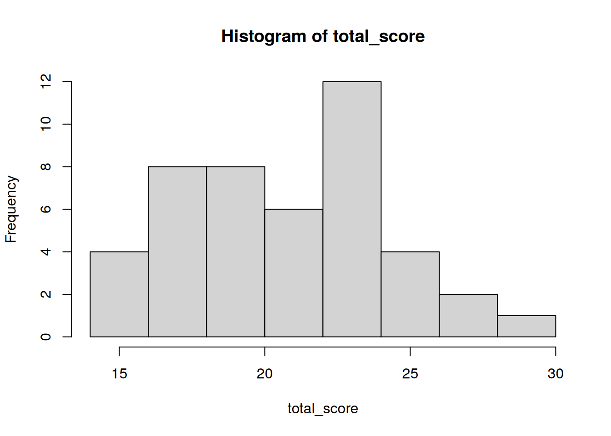
# 相関係数 cor(dx_df[, c('it_years', 'score_adv')]) cor(dx_df[, c('it_years',
# 'score_inter')]) cor(dx_df[, c('it_years', 'score_basic')])
cor(it_years, score_adv)
#> [1] 0.4365932
cor(it_years, score_inter)
#> [1] 0.5737593
cor(it_years, score_basic)
#> [1] 0.4542424
pairs(dx_df[, c("score_basic", "score_inter", "score_adv")])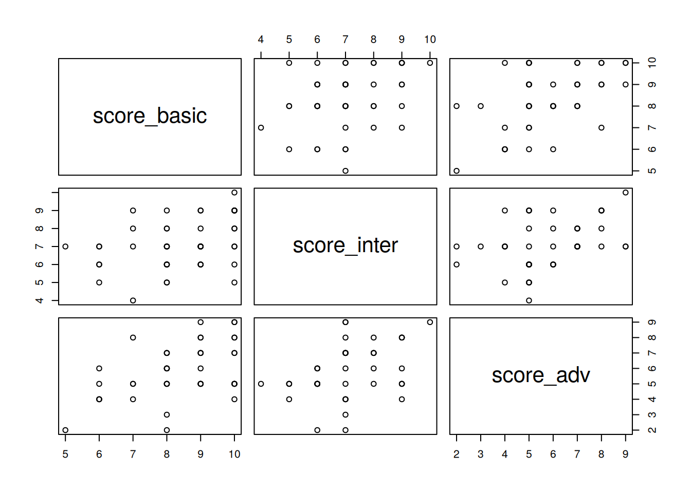
# cor(dx_df[, c('interest', 'score_basic', 'score_inter', 'score_adv')])
cor(cbind(interest, score_basic, score_inter, score_adv))
#> interest score_basic score_inter score_adv
#> interest 1.00000000 0.2083061 -0.05034584 0.1353754
#> score_basic 0.20830612 1.0000000 0.34860684 0.4770947
#> score_inter -0.05034584 0.3486068 1.00000000 0.3777784
#> score_adv 0.13537544 0.4770947 0.37777842 1.0000000
cor(interest, it_years)
#> [1] -0.2818081
# 箱ひげ図
boxplot(total_score ~ factor(emp_type)) # 2-level factor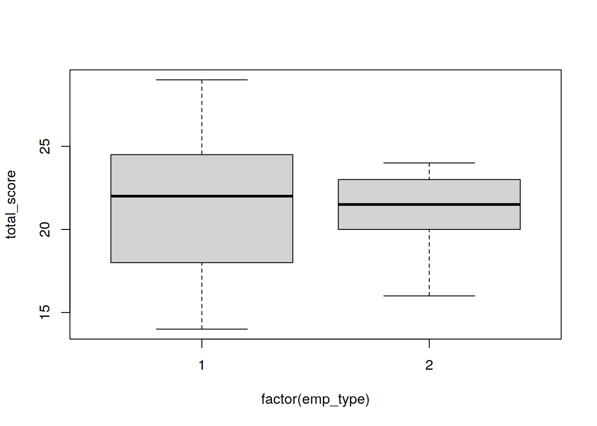
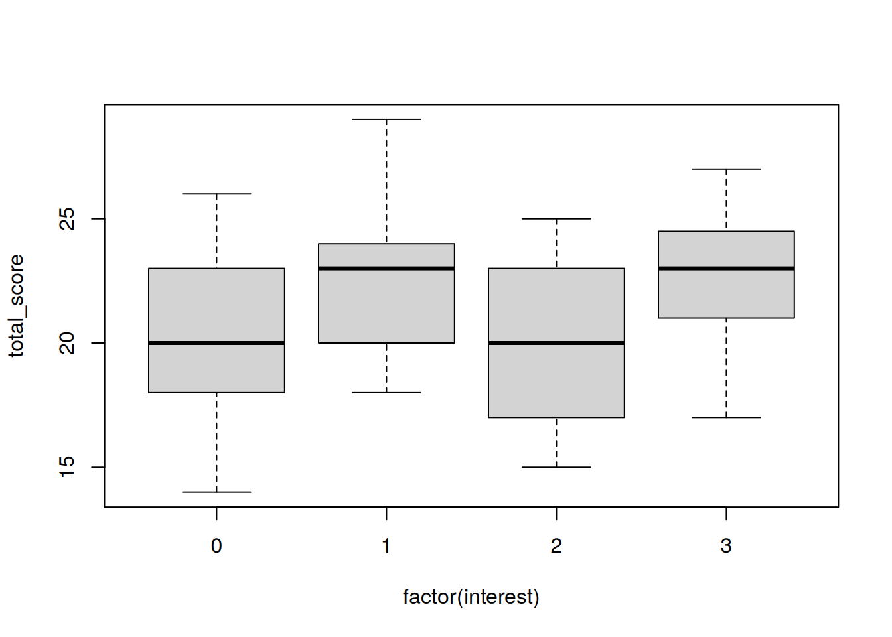
IT関連の経験年数 (it_years)と各レベルの得点の相関は, 中級問題 (\(r=0.57\)) で
最も強く, 基礎・上級問題 (\(r\approx0.44\sim0.46\)) でもそれなりの正の相関が見られる.
一方, DXへの関心度 (interest) とit_yearsの相関は\(r=-0.28\)と, むしろ弱い負の
相関であり, 「関心が高い人ほど経験があるわけではない」という, やや直感に反する
結果になっている点に注意したい (関心と経験は別物である可能性を示唆する).
平均値の差の検定
雇用形態 (正社員/契約社員) によって, 総合得点に差があるかを調べる.
total_score_grp <- split(total_score, factor(emp_type))
t.test(total_score_grp$"1", total_score_grp$"2")
#>
#> Welch Two Sample t-test
#>
#> data: total_score_grp$"1" and total_score_grp$"2"
#> t = 0.60905, df = 42.952, p-value = 0.5457
#> alternative hypothesis: true difference in means is not equal to 0
#> 95 percent confidence interval:
#> -1.369683 2.554869
#> sample estimates:
#> mean of x mean of y
#> 21.48148 20.88889p値\(=0.546\)であり, 5%水準で帰無仮説 (雇用形態間で平均得点は等しい) は 棄却されない. つまり, 本データからは, 雇用形態による理解度の差は認められない. 検定で有意差が出ないこと自体も, 「研修の効果・難易度は雇用形態に関わらず 同程度である」という, 実務上有用な (差がないという) 結論を支持する結果である.
次に, 同一受講者に対して出題された, 難易度の異なる3種類の問題 (基礎・中級・上級) の得点を比較する. これは, 同じ45名を3回測定した 対応のあるデータである.
# ペア検定
t.test(score_basic, score_inter, paired = T, alternative = "greater")
#>
#> Paired t-test
#>
#> data: score_basic and score_inter
#> t = 5.4539, df = 44, p-value = 1.063e-06
#> alternative hypothesis: true mean difference is greater than 0
#> 95 percent confidence interval:
#> 0.8764357 Inf
#> sample estimates:
#> mean difference
#> 1.266667
t.test(score_inter, score_adv, paired = T, alternative = "greater")
#>
#> Paired t-test
#>
#> data: score_inter and score_adv
#> t = 4.9685, df = 44, p-value = 5.35e-06
#> alternative hypothesis: true mean difference is greater than 0
#> 95 percent confidence interval:
#> 0.8530152 Inf
#> sample estimates:
#> mean difference
#> 1.288889
# 得点の差のt値の計算 (確認用)
m <- mean(score_inter - score_adv)
v <- var(score_inter - score_adv)
tt <- m/sqrt(v/(length(score_inter)))# var.test(x, y, ratio = 1,
# alternative = c("two.sided", "less", "greater"),
# conf.level = 0.95, ...)
# Performs an F test to compare the variances of two samples from normal populations.var.test(score_inter, score_adv) # equal variance
#>
#> F test to compare two variances
#>
#> data: score_inter and score_adv
#> F = 0.63192, num df = 44, denom df = 44, p-value = 0.1318
#> alternative hypothesis: true ratio of variances is not equal to 1
#> 95 percent confidence interval:
#> 0.3472663 1.1499146
#> sample estimates:
#> ratio of variances
#> 0.6319229基礎 > 中級の片側検定ではp値\(=1.06\times10^{-6}\), 中級 > 上級の片側検定でも
p値\(=5.35\times10^{-6}\)と, いずれも極めて小さい. 問題の難易度設計 (基礎→中級→上級)
どおりに, 得点が段階的に下がっていることが, 統計的にも裏付けられている
(研修設計・出題難易度のチェックとして妥当な結果といえる). また,
var.test()の結果 (p値\(=0.132\)) から, 中級と上級の得点の分散は等しいとみなせる.
独立性の検定
# aaa <- table(dx_df[, c('emp_type', 'dept')])
aaa <- table(emp_type, dept)
chisq.test(aaa)
#>
#> Pearson's Chi-squared test
#>
#> data: aaa
#> X-squared = 0.15873, df = 2, p-value = 0.9237
# aaa <- table(dx_df[, c('interest', 'dept')])
aaa <- table(interest, dept)
chisq.test(aaa)
#>
#> Pearson's Chi-squared test
#>
#> data: aaa
#> X-squared = 15.807, df = 6, p-value = 0.01483雇用形態と部署の間には関連は見られない (p値\(=0.924\)) が, DXへの関心度と部署の 間には, 5%水準で有意な関連が見られる (p値\(=0.0148\)). ただし, いずれの検定でも Rは「カイ二乗近似は不正確かもしれません (Chi-squared approximation may be incorrect)」という警告を出している. これは, 分割表の中に期待度数が小さい (目安として5未満の) セルが含まれているために, \(\chi^2\)分布による近似の精度が 低下していることを示す警告である. 受講者45名を部署(3)×関心度(4)に分けると, セルあたりの人数がかなり少なくなるため, この警告が出るのは無理もない.
このような場合には, 近似に頼らず, シミュレーションによって (モンテカルロ法で)
正確なp値を求めるsimulate.p.value = TRUEオプションを使うという対処法がある.
set.seed(1)
chisq.test(table(interest, dept), simulate.p.value = TRUE, B = 10000)
#>
#> Pearson's Chi-squared test with simulated p-value (based on 10000
#> replicates)
#>
#> data: table(interest, dept)
#> X-squared = 15.807, df = NA, p-value = 0.0119シミュレーションに基づくp値も\(0.012\)程度であり, 近似による結果 (p値\(=0.0148\)) と大きく変わらないことが確認できる. とはいえ, 分割表のセル数に対して標本数が 少ない場合は, 検定結果の解釈には注意が必要である.
3群以上の平均値の比較: 分散分析への橋渡し
最後に, IT関連の経験年数で3つのグループに分け, グループ間で総合得点に差が あるかを調べる. 2群であればt検定で済むが, 3群以上の平均値を一度に比較するには, 次章で学ぶ分散分析 (ANOVA)を用いる.
it_years_grp <- cut(it_years, breaks = c(-1, 2, 5, 100), labels = c("g1", "g2", "g3"),
right = T) # 右端を含む・左端は含まない
table(it_years_grp)
#> it_years_grp
#> g1 g2 g3
#> 12 13 20
# 分散分析 (1元配置)
oneway.test(total_score ~ it_years_grp) # 等分散でない (デフォルト)
#>
#> One-way analysis of means (not assuming equal variances)
#>
#> data: total_score and it_years_grp
#> F = 9.9614, num df = 2.000, denom df = 25.269, p-value = 0.0006458
oneway.test(total_score ~ it_years_grp, var.equal = T) # 等分散
#>
#> One-way analysis of means
#>
#> data: total_score and it_years_grp
#> F = 9.4284, num df = 2, denom df = 42, p-value = 0.0004147
# 代替的方法
anova(lm(total_score ~ it_years_grp)) # 注: 等分散を想定
#> Analysis of Variance Table
#>
#> Response: total_score
#> Df Sum Sq Mean Sq F value Pr(>F)
#> it_years_grp 2 163.08 81.540 9.4284 0.0004147 ***
#> Residuals 42 363.23 8.648
#> ---
#> Signif. codes: 0 '***' 0.001 '**' 0.01 '*' 0.05 '.' 0.1 ' ' 1F値\(\approx9.4\), p値\(=0.0004\)程度と, 経験年数のグループ間で総合得点には 明確な差があることがわかる (詳しい考え方は次章で扱う).
注意: カイ二乗検定の誤用例
参考として, 以下のようなコードを実行するとどうなるか考えてみよう.
chisq.test(table(total_score, it_years_grp))
#> Warning in chisq.test(table(total_score, it_years_grp)): Chi-squared
#> approximation may be incorrect
#>
#> Pearson's Chi-squared test
#>
#> data: table(total_score, it_years_grp)
#> X-squared = 35.107, df = 28, p-value = 0.1668このコードは実行はできるが, 結果の解釈には注意が必要である. total_scoreは
本来連続的な (14〜29点の) 数量データであり, これをit_years_grp(3分類)との
分割表にすると, 行数 (total_scoreの取り得る値の種類数, ここでは15) に対して
標本数 (45) が少なすぎるため, ほとんどのセルの観測度数が0か1になってしまう
(非常にスパースな分割表になる). この結果, 「カイ二乗近似は不正確かもしれません」
という警告が出る上に, 検定自体がほとんど情報を持たない. カイ二乗検定は,
カテゴリー変数同士の関連を調べる手法であり, 連続量をそのまま分割表にするのは
誤用である点に注意したい. 連続量と群 (カテゴリー) の関係を調べたいのであれば,
上記の分散分析のように, 連続量を応答変数として扱う方が適切である.
自主課題:
- Q.
emp_typeとdeptの独立性検定,interestとdeptの独立性検定で, それぞれ警告が出る理由を, 分割表の中身を確認して説明しなさい. - Q. なぜ最後の
chisq.test(table(total_score, it_years_grp))は 「誤用」だと考えられるのか, 自分の言葉で説明しなさい.